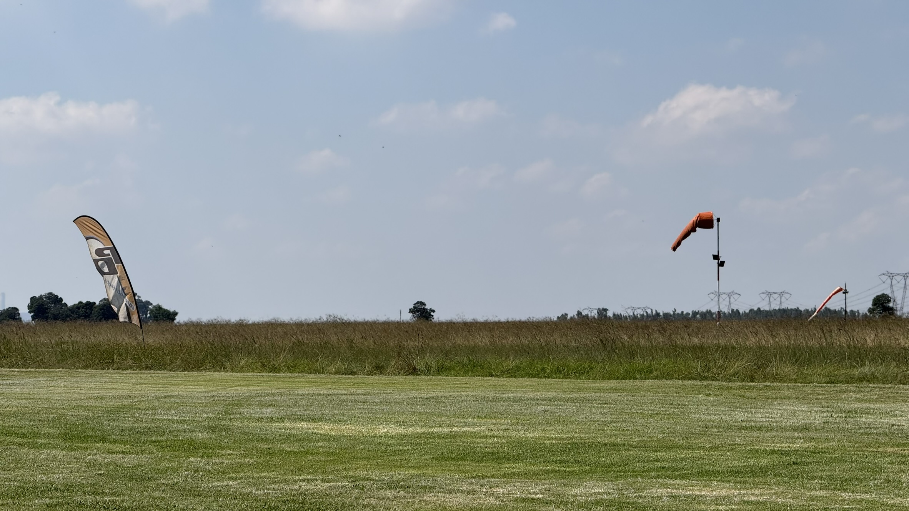

Outside research
Just something outside geology.
A place for paintings, sketches, and notes outside field and laboratory work.
A separate space for jumps, images, and short notes beyond the geology pages.